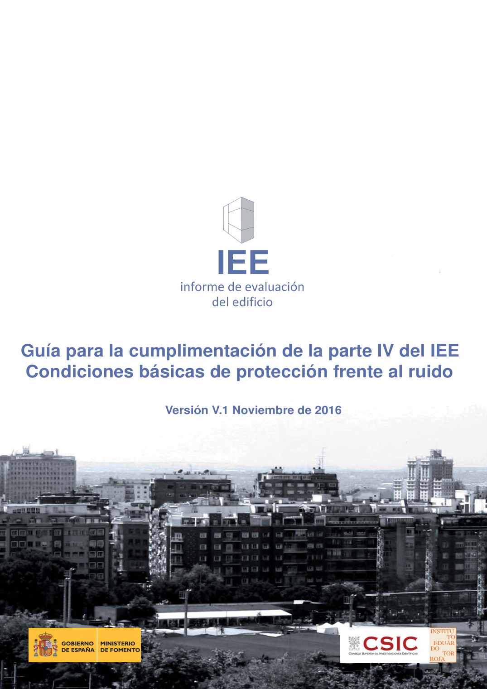

GUIA · Portada y páginas previas · versión 2016-11-01 · capa guia
Formatos: JSON compacto · Markdown · PDF fuente
Ámbito del documento · texto del ámbito · documento y tablas
Tipo: referencias, tablas, figuras · nivel 0 · sección estimada: Portada y páginas previas · padre:
Guía para la cumplimentación de la parte IV del IEE Condiciones básicas de protección frente al ruido Versión V.1 Noviembre de 2016 INSTITU TO EDUAR DO TOR ROJA Guía para la cumplimentación de la parte IV del IEE. Condiciones básicas de protección frente al ruido 2 Dirección y coordinación Luis Vega Catalán Mª Cristina Colomo Fernández Eduardo González de Prado Dirección General de Arquitectura, Vivienda y Suelo. Ministerio de Fomento Mª Teresa Carrascal García Instituto de Ciencias de la Construcción Eduardo Torroja. IETcc- CSIC Autores Mª Teresa Carrascal García Amelia Romero Fernández Mª Belén Casla Herguedas Unidad de Calidad en la Construcción del Instituto de Ciencias de la Construcción Eduardo Torroja IETcc- CSIC Se agradece la colaboración de Belén Delgado Giménez Fundación FIDAS Alberto Esteban González C.T.O. Estudios y proyectos – Gikesa Giovanni Muzio C.T.O. Estudios y proyectos Francisco Labastida Azemar Arquitecto, asesor CSCAE Pedro F. Nogueira López Universidad de A Coruña Alejandro Sansegundo Sierra Acústica SanSegundo Esta Guía para la cumplimentación de la parte IV del IEE. Condiciones básicas de protección frente al ruido, nace en el marco del convenio de colaboración llevado a cabo entre el Ministerio de Fomento y el Instituto de Ciencias de la Construcción Eduardo Torroja y forma parte de la estrategia de este Ministerio de generar una serie de documentos de ayuda que faciliten la aplicación de la normativa de la edificación y que en este caso concreto, ofrezca a los técnicos criterios para poder realizar una evaluación del estado inicial de las edificaciones en lo referente a las condiciones acústicas de las viviendas existentes y plantear medidas que incrementen su confort acústico. En la redacción de este documento se ha utilizado algunos de los contenidos y de las figuras de la Guía de aplicación del DB HR Protección frente al ruido. Dicha guía puede consultarse en: http://www.codigotecnico.org/index.php/menu-documentos-complementarios/menu-guia-aplicacion-db-hr Se permite la reproducción del contenido total o parcial de esta Guía siempre y cuando se haga citando la fuente original. Guía para la cumplimentación de la parte IV del IEE. Condiciones básicas de protección frente al ruido 3 Índice Objeto de este documento .............................................................................................................................. 3 Estructura de la parte IV del IEE ..................................................................................................................... 4 IV.0. INTRODUCCIÓN ....................................................................................................................................... 8 IV.1. DATOS GENERALES DEL EDIFICIO (Según CTE-DB-HR) ................................................................... 9 IV.2. CONDICIONES DE PROTECCIÓN FRENTE AL RUIDO (Según CTE-DB-HR) .................................. 11 IV.2.1 RUIDO EXTERIOR======............................................................................................................................ 11 IV.2.2 RUIDO INTERIOR. (Particiones verticales) ............................................................................................................ 14 IV.2.3 RUIDO INTERIOR. (Particiones horizontales) ........................................................................................................ 19 IV.2.4 RUIDO INTERIOR (Uniones) ................................................................................................................................. 22 IV.2.5 RUIDO DE INSTALACIONES/ RECINTOS DE ACTIVIDAD .................................................................................. 24 IV.3. VALORACIÓN DE LAS PRESTACIONES BÁSICAS DE PROTECCIÓN FRENTE AL RUIDO ........... 29 IV.4. RECOMENDACIONES PARA LA MEJORA DE PROTECCIÓN FRENTE AL RUIDO ......................... 33 IV.4.1 MEDIDAS DE MEJORA .......................................................................................................................................... 33 IV.4.2 POTENCIAL DE LAS MEDIDAS DE MEJORA ....................................................................................................... 36 IV.4.3 INCIDENCIA DE LAS MEDIDAS DE MEJORA SOBRE OTRAS PRESTACIONES. TRANSVERSALIDAD .......... 37 IV.5. PRUEBAS Y COMPROBACIONES REALIZADAS POR EL TÉCNICO ................................................ 38 IV.6. OBSERVACIONES .................................................................................................................................. 40 Anejo 1. Parte IV del Informe de Evaluación del Edificio ........................................................................... 41
1 referencias con forma DB se han ocultado por no cumplir la sintaxis oficial; la lista original sigue en el JSON.


PDF fuente redistribuible: copia fiel enlazada en esta página (SHA256 verificado).